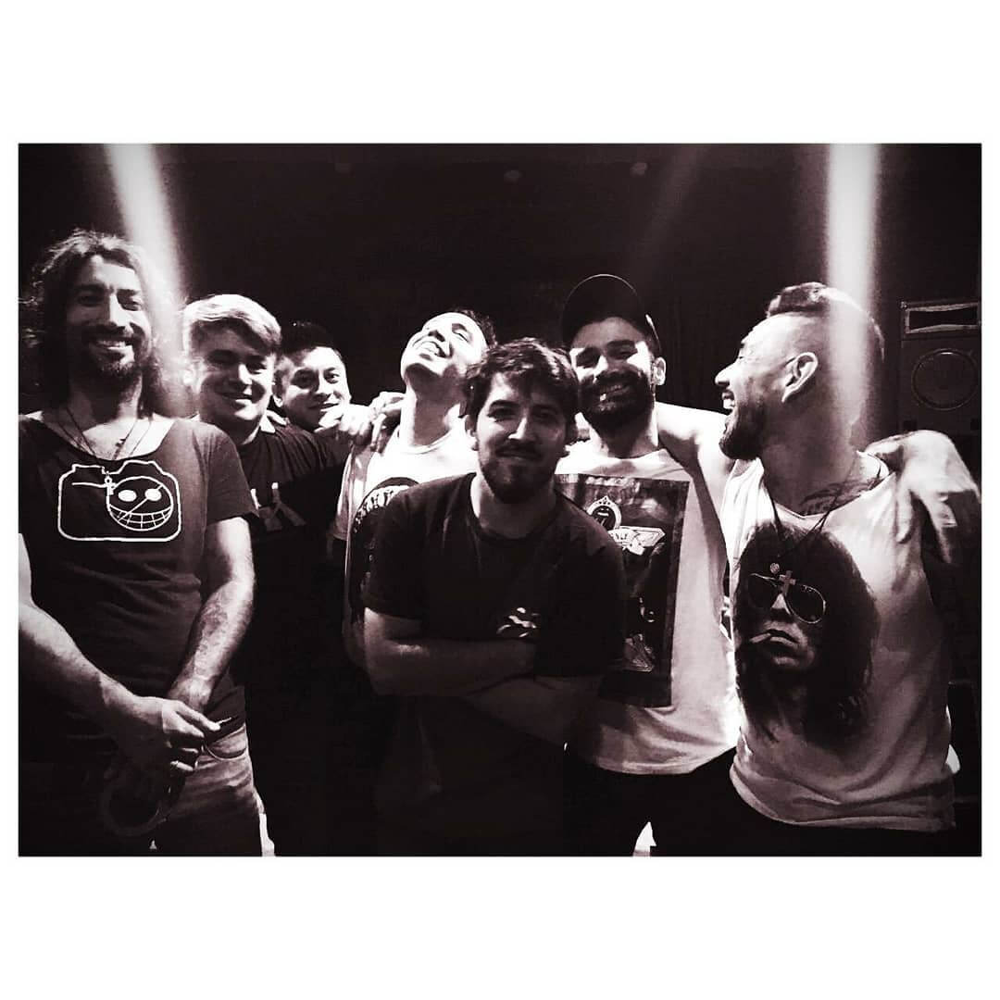

Nosotros
Temporada de Lobos nace a principios del 2017 cuando Adrián Figueredo, ex guitarrista de Nil Obstat, con intenciones de formalizar un nuevo proyecto con aires musicales dirigidos al rock, se pone al frente en la voz y guitarra, junto a Damián Borgognoni en bajo, Alejandro Manzilla en guitarra principal, Alejandro Chamorro en teclados, sintetizadores y coros, y Matias Ruiz Mancilla en batería y percusión. Con Influencias de diferentes géneros musicales desde rock, rock stoner, rock nacional.
En marzo de 2017 se le da forma a los temas compuestos por Adrián Figueredo, y con banda completa, se hace la grabación del primer simple “Vas Perdido” producida por Martín Méndez de Los Caballeros de la Quema.
A comienzos del 2018 se inicia la grabación del disco, se hacen las bases de batería, bajo, y guitarras principales, en el emblemático Estudio Romaphonic (ex Circo Beat) a cargo de Esteban Del Río.

La grabación del resto de los instrumentos y voces se realiza en Estudio de grabación La Boheme, siempre a cargo de Esteban Del Río, con producción de Alejandro Manzilla y participación como co-productor en “Cómo hago” de Gustavo Zorry poniendo su impronta y su color.
En el disco hubo participaciones de Sol Pereyra, Soledad Borsini, Damián Pantaleone, Brenda Cuesta, Mercedes Núñez, Beto Olguín (Los Pérez García), Juan Cruz Arin, Carolina De La Presa como compositora de letra de “Nena” y “Cuando”, y Gustavo Zorry (Jóvenes Pordioseros). A mediados de 2018 ya con la grabación iniciada se suma a la banda Marcelo Santillán en guitarra y voces.

Con tan solo dos años de formación,Temporada de Lobos pasó por diferentes escenarios en Capital Federal, Tandil y Buenos Aires, en lugares como Lucille, Berlina Vorterix, Circus, Strummer Bar y La Cúpula Bar Rock. Además acompañó a bandas como Led Ladies en Makena y La Franela en La Trastienda entre otros.